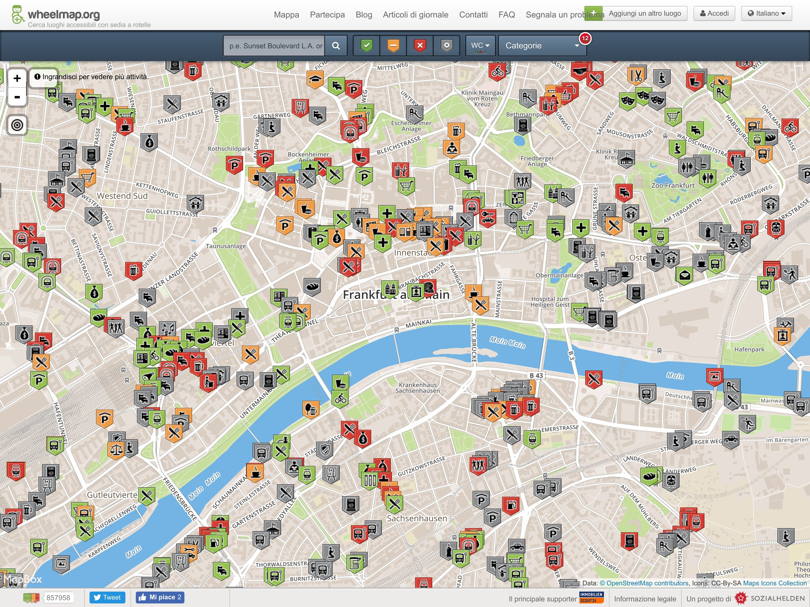
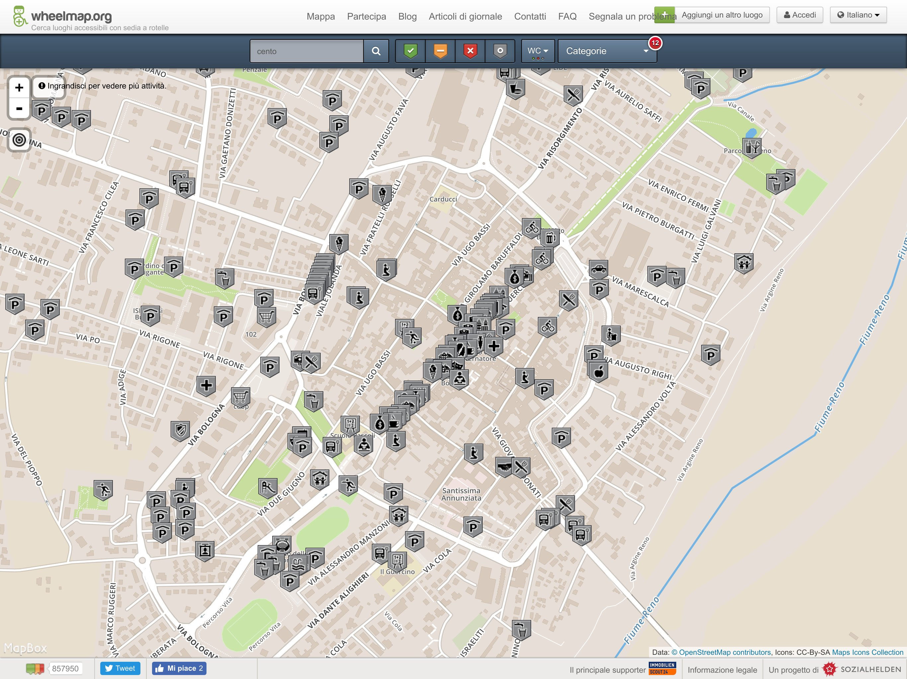
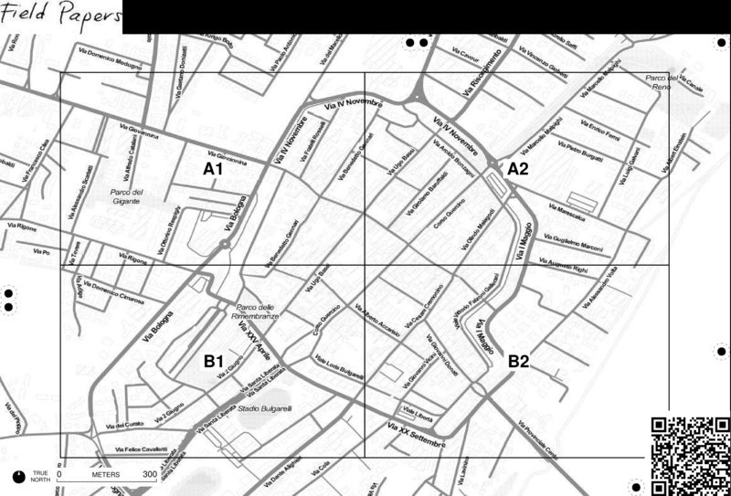
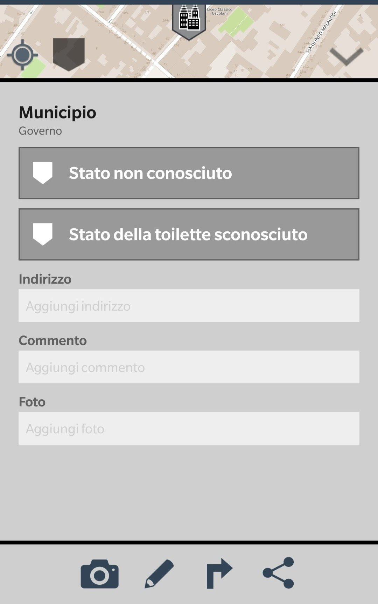
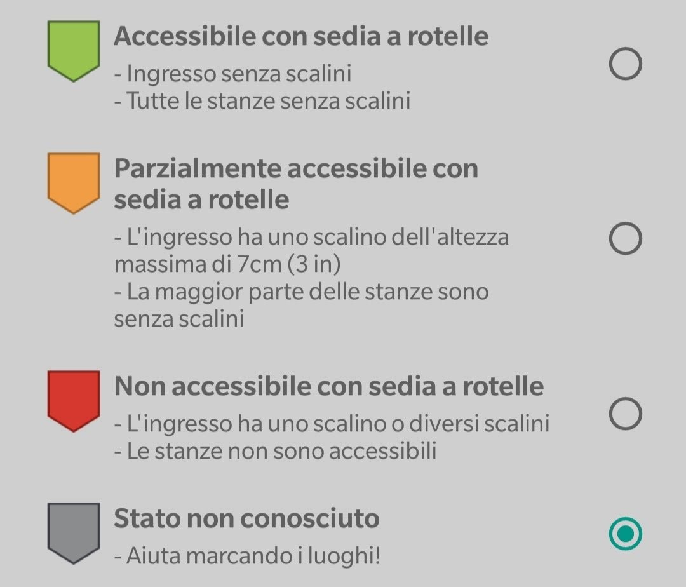
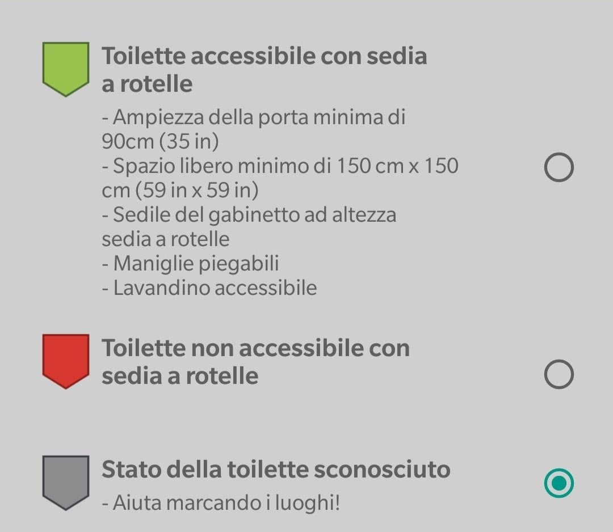

Obbligo di Accesso!
5 Aprile 2018
Mappare l'accessibilità
Per conoscere

Francoforte
Mappare l'accessibilità
Per conoscere

Cento
Condividere
- I dati saranno caricati su OpenStreetMap
- OpenStreetMap è una mappa libera
- Significa che chiunque può contribuire
- Significa che chiunque la può utilizzare
- A patto che rimanga libera
Primi passi
- Installare wheelmap
- (opz.) Creare un account su openstreetmap.org
- Scegliersi un'area da mappare

Accessibilità dei luoghi

Accessibilità delle entrate

Accessibilità delle toilette
